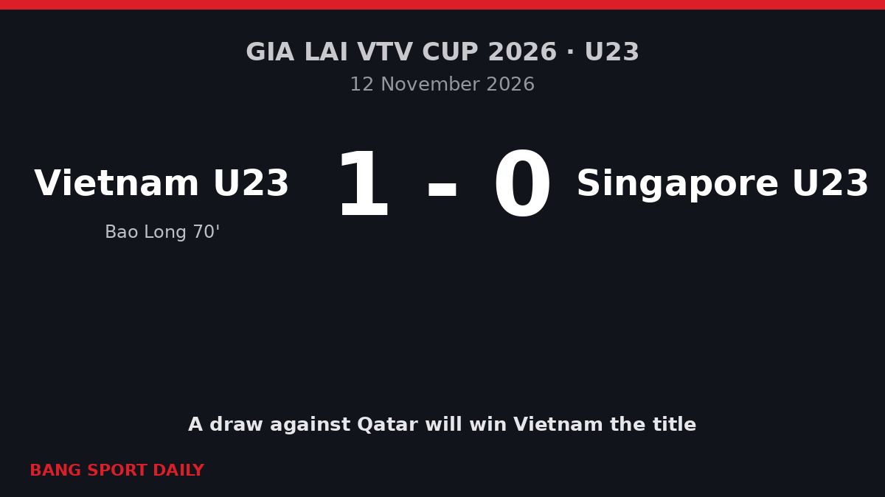

Substitute Bao Long Sends Vietnam U23 Past Singapore and to the Brink of the VTV Cup Title
Vietnam won 1-0 in Pleiku for a second straight win and need only a draw against Qatar on Saturday to lift the trophy.

What happened
Vietnam's under-23 team beat Singapore 1-0 at Pleiku Stadium in Gia Lai on Thursday 12 November 2026, their second win at the Gia Lai VTV Cup 2026, an international friendly tournament. Substitute Nguyen Bao Long scored the only goal in the 70th minute, flicking the ball in with his heel after shots from Nguyen Minh Tam and Van Thuan in the penalty area.
Vietnam dominated but needed a long time to score. Williams Minh Hoang hit the crossbar in the 11th minute, Gia Bao headed against the bar in the 37th, and Ngo Dang Khoa struck the post in the 61st. Singapore goalkeeper Muhammad Yazid made several saves, and a Bao Long header in the 82nd minute was ruled out because the referee had already blown for a foul.

Why it matters
The tournament is part of Vietnam's preparation of its next under-23 generation under coach Dinh Hong Vinh. After beating Thailand 3-0 in their opening match, Vietnam have won both games without conceding, and are close to a trophy on home soil.
Key facts and numbers
- Score: Vietnam U23 1-0 Singapore U23.
- Goal: Nguyen Bao Long 70'.
- Match statistics (VnExpress): Vietnam had 70% of possession, 14 shots (6 on target) and 12 corners; Singapore had no shots and no corners.
- Table: Vietnam 6 points from two matches, Qatar 4 after beating Thailand 2-1.
What happens next
Vietnam play Qatar at 19:00 on Saturday 14 November. Leading by two points, they need only a draw to win the title.